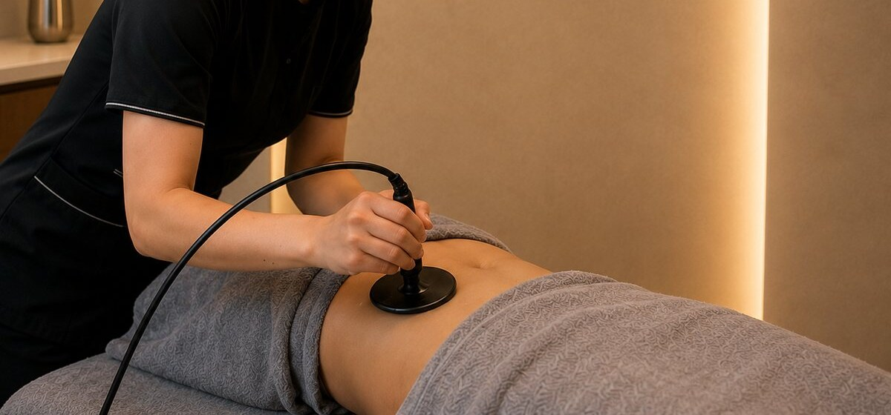
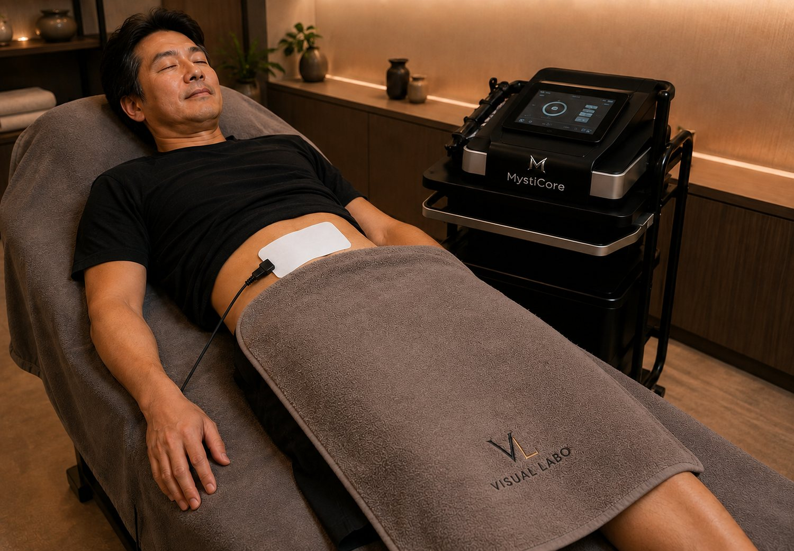

MENU ／ VISUAL LABO
メニューあなたに合わせて、選べる。
BODY MAINTENANCE MENU ／ HYPER EMS MENU。
BODY MAINTENANCE MENU ／ HYPER EMS MENU。
選ぶメニューは、2つだけ。
「しっかり整える本格ケア」か、「寝ながら筋トレ」か。
あなたの目的で選ぶだけ。
高周波で深部から温め、手技でほぐし、HYPER EMSで仕上げる。
気になる部位を選べる90分／120分の集中メニュー。

好きな箇所に貼って、寝ながら過ごすHYPER EMSトレーニングメニュー。
引き締め・キープ・腹筋づくりに（最大60分）。

月額制で、ライフスタイルに合わせて続けられます。
迷ったら、お悩み診断へ。
「温める」と「動かす」を組み合わせることで、巡り・引き締め・コンディションづくりをサポートします。
高周波で深部からじんわり温め、血流やリンパの巡りをサポート。冷えてこわばった部分をゆるめ、めぐりやすい状態へ整えます。
HYPER EMSで、自分では動かしにくい奥のインナーマッスルに直接アプローチ。温めてゆるんだあとに動かすから、引き締めや姿勢を支える筋肉づくりを効率よくサポートします。
「温めて動かす」を習慣にすることで、体温・基礎代謝が上がるといわれています。ためこみにくく、整った状態をキープしやすいコンディションへ。
決まったコースを押しつけません。その日の体調・気になる部位をカウンセリングで伺い、当日のケア内容をスタッフと一緒に決めるから、無理なく続けられます。
体が冷えていると、エネルギーを使いにくく、ためこみやすい。だからVISUAL LABOは、自分では届かない深部から、しっかり温める。体温が上がると基礎代謝も上がるといわれています。続けるほど、太りにくい体づくりをサポートします。
単発・月額・温活メニュー・オプション・VIP まで。
初回体験 90分 通常¥14,800→¥4,800。新橋駅 徒歩3分。